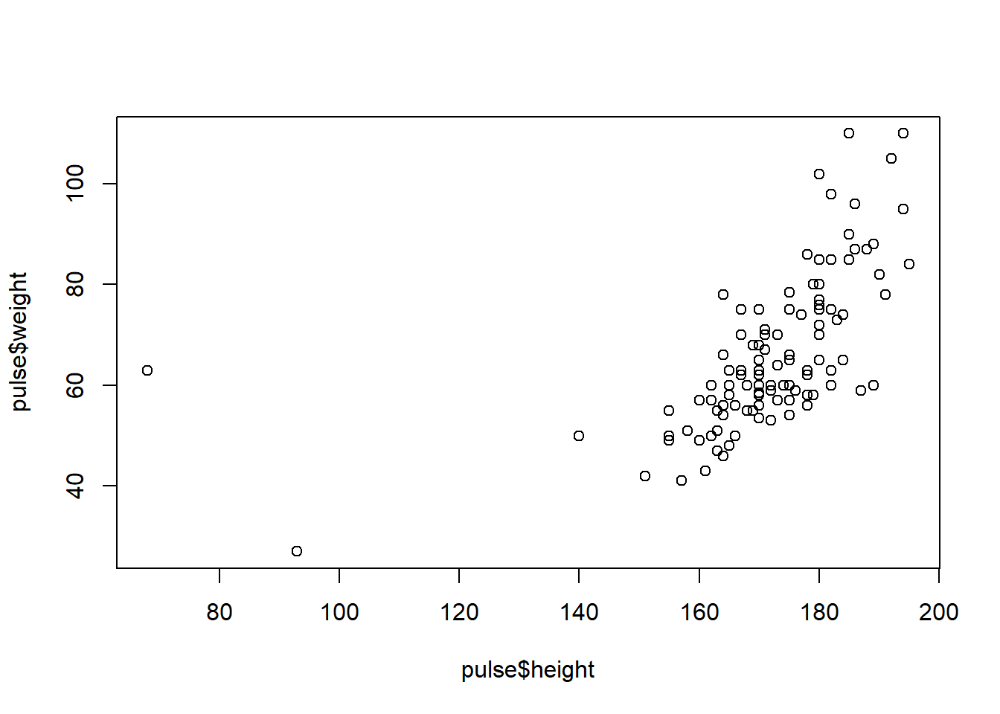

Chapter 1 Basics of R
1.1 Data sets
Throughout the course we will use the two data sets described below.
1.1.1 Pulse
Students in an introductory statistics class (MS212 taught by Professor John Eccleston and Dr Richard Wilson at The University of Queensland) participated in a simple experiment. The students measured their own pulse rate. They were then asked to flip a coin. If the coin came up heads, they were to run in place for one minute. Otherwise they sat without movement for one minute. Then everyone measured their pulse again. The pulse rates and other physiological and lifestyle data are given in the data table.
| Variable | Explanation |
|---|---|
| name | Name of a participant |
| height | Height (cm) |
| weight | Weight (kg) |
| age | Age (years) |
| gender | Sex (male/female) |
| smokes | Regular smoker? (yes/no) |
| alcohol | Regular drinker? (yes/no) |
| exercise | Frequency of exercise (high/moderate/low) |
| ran | Whether the student ran or sat between the first and second pulse measurements (ran/sat) |
| pulse1 | First pulse measurement (rate per minute) |
| pulse2 | Second pulse measurement (rate per minute) |
| year | Year of the class (1993 - 1998) |
The pulse data set is available in the data folder as tab-delimited text: pulse.txt. It is also available in SPSS-format as pulse.sav.
1.1.2 Survey
This data frame contains the responses of 233 Statistics I students at the University of Adelaide to a number of questions. It is a slightly modified version of the survey data from the MASS pacakge.
| Variable | Explanation |
|---|---|
| name | Name of a participant |
| gender | Sex (male/female) |
| span1 | Span (distance from tip of thumb to tip of little finger of spread hand) of writing hand (cm) |
| span2 | Span of non-writing hand (cm) |
| hand | Writing hand of student (left/right) |
| fold | Fold your arms! which is on top? (right/left/neither) |
| pulse | Pulse measurement (rate per minute) |
| clap | Clap your hands! which is on top? (right/left/neither) |
| exercise | Frequency of exercise (freq/some/none) |
| smokes | How much the student smokes (heavy/regul/occas/never) |
| height | Height (cm) |
| m.i | whether the student expressed height in imperial (feet/inches) or metric (centimetres/metres) units. (metric/imperial) |
| age | Age of the student (years) |
The pulse data set is available in the data folder as tab-delimited text: survey.txt.
1.2 Introduction
1.2.1 Why this course?
Modern science requires modern statistical methods:
- Genomics/bioinformatics
- Advanced survival data analysis
- Causal modeling
- …
Statisticians make methods are made available as packages in R.
No need to wait until they are programmed into SPSS.
1.2.2 What is R?
1.2.2.1 R: a short history
S: a programming language for statistics by John Chambers (Bell Labs) in the 1970s-80s.
Two implementations:
- S-plus (1988, commercial)
- R (1993, GNU public license) by Robert Gentleman and Ross Ihaka (Univ. of Auckland)
The R Foundation for Statistical Computing. Non-profit.
Huge community (users, package writers).
1.2.2.2 Open source
Free software.
Volunteer work (mostly by academics).
Anyone can see the source code.
Anyone can contribute:
- write code
- report bugs
- write documentation
1.2.2.3 Obtaining R
CRAN: Comprehensive R Archive Network
- Repository for R and packages
- Go to http://www.r-project.org
Free download
- New major version (R 3.2.0) every year
- New minor versions (R 3.2.4) in between
Also on CRAN
- Manuals (don’t read them)
- Mailing lists + archives (well indexed on google)
1.2.3 R and RStudio
RStudio: open source integrated development environment to R (2011)
Adds useful features to help write code and organize projects
Not necessary to use R, but highly recommended
RStudio organises input and output in useful windows
1.2.4 Course overview
1.2.4.1 What we teach
This is not a statistics course!
To learn about statistics, follow the Medical Statistics course (or more advanced courses).
This course teaches R proficiency:
- The mechanics of R
- How to use other people’s R scripts
- How to write your own R scripts
- How to use R packages
Focus: R as a language for data analysis.
1.2.4.2 Course structure
- Interactive lectures
- Practice time in between
Hands-on at four levels:
- Type with me
- Mini-exercises briefly interrupt the lecture
- Longer exercises to do it on your own
- Advanced exercises introduce advanced concepts for quick learners (optional)
Eight half-day slots.
1.3 Basics
1.3.1 R as a calculator
1.3.1.1 Calculations
At the prompt > you can do any calculations you like. Press enter to see the result.
2*8## [1] 164+5## [1] 92/8## [1] 0.255^2 # ^ = to the power## [1] 25Note: decimals always with ., never ,.
1.3.1.2 Parentheses
Use parentheses as much as possible to make sure the calculations are done in the right order.
12/2*3## [1] 1812/(2*3)## [1] 2RStudio will automatically insert a closing parenthesis. If you don’t like this, change using Tools…Global options…Code…Editing.
1.3.1.3 Arithmetic functions
Useful functions.
sqrt(10) # square root## [1] 3.162278log(10) # natural logarithm## [1] 2.302585Terminology: the function (e.g. log) is applied to its argument (e.g. 10). The argument of a function is always between parentheses.
Other useful functions
log2(logartithm base 2)log10(logarithm base 10)abs(absolute value)
1.3.1.4 Multiline commands
Use up/down arrow to retrieve previous/next commands. Use Ctrl-R to see command history and type letters to select a line.
Getting a + as a prompt means the command is not finished yet. Continue typing or press Esc.
5*(1+1
)## [1] 101.3.1.5 (*) Integer division and remainders
The remainder of one number after division by another.
17 %/% 5 # integer division## [1] 317 %% 5 # remainder## [1] 217 %/% 5 evaluates to 3 because 17 = 3*5+2, so 5 fits into 17 3 times.
17 %% 5 evaluates to 2 because 17 = 3*5+2, so 2 is the remainder of 17 when divided by 5.
1.3.2 Variables
1.3.2.1 Variable names
Variables store values or results of calculations. Choose the names of variables freely.
x <- 5
my_calculation <- 6 + xTo find out what the value of a variable is: type the name.
x## [1] 5Rstudio has autocomplete (with tab). Useful for long variable names.
1.3.2.2 Legal variable names
Note that _ and . are allowed in variable names. Numbers are allowed too.
Not allowed:
- names containing a space
- names containing a one of @#!%$^()-+=!~?,<>}{][`
- for, while, repeat, if, else, TRUE, FALSE, Inf, NA, NaN (reserved names)
- a name that starts with a number
Variable names in R are case sensitive. Everything else too!
Choose meaningful variable names for readable code.
1.3.2.3 Assignment
Arrow is called “assignment”. Also allowed: =.
x = 5Assignments are needed to store a result. No assignment: printed to screen and lost.
x+1## [1] 6x## [1] 5You have asked R what x+1 is, but x did not change. To change the value of a variable, reassign.
x <- x + 1
x## [1] 6Remember: no assignment, no change
Important: variables are stored in memory, not on disk. If you close R, all variables are lost (if save workspace image = no)
Your RStudio has an environment tab that lists all the variables you made.
1.3.2.4 (*) The workspace
To list the variable(s) you have defined:
ls()## [1] "catLinkTaskSection" "catLoad" "catReadCsv"
## [4] "catReadDelim" "catReadLines" "catReadTable"
## [7] "catSlot" "catTopic" "my_calculation"
## [10] "params" "x"Note that this is a function with no arguments.
To remove a variable from memory:
rm(x)You only need to remove a variable from memory when:
- The variable is large and you want to free memory
- You have accidentaly overwritten one of R’s fixed constants
Note that rm is definitive and you cannot undo it!
Quick task(s):
Solve the task(s), and check your solution(s) here.
1.3.3 Vectors
Vectors are the basic building blocks of the R language.
1.3.3.1 Vector basics
Variables can contain vectors of numbers. A vector can be e.g. just any sequence of numbers.
You can make a vector using c (combine):
x <- c(3, 6, 7, 2)Calculations or functions often work on vectors elementwise. This is helpful to do many calculations simultaneously:
x^2## [1] 9 36 49 4x - 18## [1] -15 -12 -11 -16sqrt(x)## [1] 1.732051 2.449490 2.645751 1.414214Some functions summarize a vector to a single number:
sum(x)## [1] 18To find out the number of elements in a vector:
length(x)## [1] 41.3.3.2 Simple sequences
A simple regular sequence you can make with : (colon) operator:
y <- 1:10
7:9## [1] 7 8 91.3.3.3 Simple selection
To see only part of a vector use square brackets. Combine with : to select more than one element:
x[1]## [1] 3x[3:4]## [1] 7 2Quick task(s):
Solve the task(s), and check your solution(s) here.
1.4 Projects and scripts
1.4.1 Projects
We are going to read our first data set into R. To structure this, we are going to make a project.
1.4.1.1 Opening a new project
Choose File…New project…New directory… and create a new folder on your computer for this R course.
Projects are a feature of RStudio to organize all files and scripts that you need for a single project and to keep them separate from other projects. From now on in this course you are going to work within the new R course project you created.
Look top right in the RStudio window to check which project you are working in. There, you can also switch between projects.
RStudio has created a .Rproj file for you that you can use to open Rstudio. You end up in the right project immediately.
1.4.1.2 Creating a folder
In our new project we are going to create a folder that contains our data sets
Choose the files tab and click new folder to create a data folder, or type at the prompt
dir.create('data')From the course webpage, download the data set pulse.txt from the course webpage and store them in the new data folder you created.
Check in Rstudio that the files are indeed in the right folder.
1.4.1.3 Quick exercise
- Close RStudio and open it again. Make sure you are in the right project.
1.4.2 Reading data
Now we can read data into R.
1.4.2.1 Reading tab-delimited text
The file pulse.txt is a tab-delimited text file. We can read it into R with
# To get 'pulse.txt' directly from the server, use:
# pulse <- read.table( url( "https://barmsijs.lumc.nl/R_course/index.html/tree/master/data/pulse.txt" ), header = TRUE, sep = "\t" )pulse <- read.delim( "data/pulse.txt" )We added data/ because the file is in the data subfolder we just created.
Note that we assigned <- the result of read.delim to pulse. We have given our dataset the name pulse.
1.4.2.2 View
To check that you’ve read the data correctly
View(pulse)Note the capital V.
Quick task(s):
Solve the task(s), and check your solution(s) here.
1.4.3 Scripts
So far we have been typing at the prompt. What we type at the prompt is executed and lost. Using scripts allows repeating things and make our results reproducible.
1.4.3.1 Making a script
We will open an R script File…New file…R script. An R script is just a text editor. Type some R code into the script
2^6
14+15
3-4We can run (Ctrl+Enter) part of this code by sending it to the prompt. Check what happens if we run when
- The cursor is in a line
- We made a bock of several lines
- We made a block of part of a line
We can source to run the whole script.
We can save a script. Use the .R extension.
1.4.3.2 Using a script
The script should contain the analysis you want to reproduce later.
Type at the prompt only to try things out.
To check that the script works, close RStudio and open again. Run the script.
More advanced way of working with scripts: R markdown (later in the course)
1.5 Data frames (basics)
So we are now able to read in data sets (tables). A data set in R is called a data.frame.
pulse <- read.delim( "data/pulse.txt" )survey <- read.delim( "data/survey.txt" )R can have many data sets in memory simultaneously. You will always have to specify which data set you are working in.
1.5.1 Exploring
1.5.1.1 Dimensions
Rows in a data.frame are typically subjects; columns are variables.
To find the size of a data.frame
pulse <- read.delim( "data/pulse.txt" )
ncol(pulse)## [1] 12nrow(pulse)## [1] 110dim(pulse)## [1] 110 121.5.1.2 Showing head and tail
To get a quick impression of a data.frame:
headprints the first 6 rowstailprints the last 6 rows
If you want more or less than 6, add the number you want as a second argument to the function:
head(pulse)## name height weight age gender smokes alcohol exercise ran pulse1
## 1993_A Bonnie 173 57 18 female no yes moderate sat 86
## 1993_B Melanie 179 58 19 female no yes moderate ran 82
## 1993_C Consuelo 167 62 18 female no yes high ran 96
## 1993_D Travis 195 84 18 male no yes high sat 71
## 1993_E Lauri 173 64 18 female no yes low sat 90
## 1993_F George 184 74 22 male no yes low ran 78
## pulse2 year
## 1993_A 88 1993
## 1993_B 150 1993
## 1993_C 176 1993
## 1993_D 73 1993
## 1993_E 88 1993
## 1993_F 141 1993tail(pulse, 3)## name height weight age gender smokes alcohol exercise ran pulse1 pulse2
## 1998_P Chris 182 60 22 male no yes low sat 86 84
## 1998_Q Lewis 170 65 18 male no yes high sat 69 64
## 1998_R Gene 185 85 19 male no yes moderate sat 75 68
## year
## 1998_P 1998
## 1998_Q 1998
## 1998_R 1998We’ve already seen View.
With names (alternatively colnames) you find the names of the variables (columns) in the data.frame:
names(pulse)## [1] "name" "height" "weight" "age" "gender" "smokes"
## [7] "alcohol" "exercise" "ran" "pulse1" "pulse2" "year"Quick task(s):
Solve the task(s), and check your solution(s) here.
1.5.2 Extracting
1.5.2.1 Columns
To extract a column of a data.frame use $. The result is a vector:
pulse$age## [1] 18 19 18 18 18 22 20 18 19 23 20 19 22 18 18 22 19 18 21 19 19 34 20 26 19
## [26] 18 18 21 19 21 20 19 19 23 19 20 18 19 18 18 20 23 21 19 19 18 26 20 19 22
## [51] 20 20 20 18 20 20 20 18 19 20 18 20 18 20 21 19 20 21 19 22 23 19 20 19 20
## [76] 20 20 20 18 19 18 41 21 25 28 21 18 45 19 18 19 19 21 21 23 28 20 20 20 19
## [101] 24 19 20 20 23 19 19 22 18 19Note the autocomplete in RStudio that helps suggest the right column.
To add a column to a data.frame, use the assigmnent:
pulse$pulse.diff <- pulse$pulse2 - pulse$pulse1
head( pulse )## name height weight age gender smokes alcohol exercise ran pulse1
## 1993_A Bonnie 173 57 18 female no yes moderate sat 86
## 1993_B Melanie 179 58 19 female no yes moderate ran 82
## 1993_C Consuelo 167 62 18 female no yes high ran 96
## 1993_D Travis 195 84 18 male no yes high sat 71
## 1993_E Lauri 173 64 18 female no yes low sat 90
## 1993_F George 184 74 22 male no yes low ran 78
## pulse2 year pulse.diff
## 1993_A 88 1993 2
## 1993_B 150 1993 68
## 1993_C 176 1993 80
## 1993_D 73 1993 2
## 1993_E 88 1993 -2
## 1993_F 141 1993 631.5.2.2 Row names
A data.frame always has row names. Note that these names are not themselves a column of the data.frame!
rownames(pulse)## [1] "1993_A" "1993_B" "1993_C" "1993_D" "1993_E" "1993_F" "1993_G" "1993_H"
## [9] "1993_I" "1993_J" "1993_K" "1993_L" "1993_M" "1993_N" "1993_O" "1993_P"
## [17] "1993_Q" "1993_R" "1993_S" "1993_T" "1993_U" "1993_V" "1993_W" "1993_X"
## [25] "1993_Y" "1993_Z" "1995_A" "1995_B" "1995_C" "1995_D" "1995_E" "1995_F"
## [33] "1995_G" "1995_H" "1995_I" "1995_J" "1995_K" "1995_L" "1995_M" "1995_N"
## [41] "1995_O" "1995_P" "1995_Q" "1995_R" "1995_S" "1995_T" "1995_U" "1995_V"
## [49] "1996_A" "1996_B" "1996_C" "1996_D" "1996_E" "1996_F" "1996_G" "1996_H"
## [57] "1996_I" "1996_J" "1996_K" "1996_L" "1996_M" "1996_N" "1996_O" "1996_P"
## [65] "1996_Q" "1996_R" "1996_S" "1996_T" "1996_U" "1997_A" "1997_B" "1997_C"
## [73] "1997_D" "1997_E" "1997_F" "1997_G" "1997_H" "1997_I" "1997_J" "1997_K"
## [81] "1997_L" "1997_M" "1997_N" "1997_O" "1997_P" "1997_Q" "1997_R" "1997_S"
## [89] "1997_T" "1997_U" "1997_V" "1997_W" "1998_A" "1998_B" "1998_C" "1998_D"
## [97] "1998_E" "1998_F" "1998_G" "1998_H" "1998_I" "1998_J" "1998_K" "1998_L"
## [105] "1998_M" "1998_N" "1998_O" "1998_P" "1998_Q" "1998_R"Name of each row must be unique.
1.5.2.3 Elements
An individual entry to a data.frame can be extracted using square brackets [, either using the names of row and column (note the quotes) or their indices. Row comes before the comma, column after.
pulse["1993_E", "height"]## [1] 173pulse[5, 2]## [1] 173You can also use ranges like with vectors
pulse[4:6, 1:5]## name height weight age gender
## 1993_D Travis 195 84 18 male
## 1993_E Lauri 173 64 18 female
## 1993_F George 184 74 22 maleMuch more about using square brackets later in the course.
1.5.2.4 (*) Removing a column
To remove a column from a data.frame, assign NULL to that column:
pulse$pulse.diff <- NULLQuick task(s):
Solve the task(s), and check your solution(s) here.
1.5.3 Example data
R contains many example data sets. To see which, see:
data()Example data are immediately accessible in R. For example:
BOD## Time demand
## 1 1 8.3
## 2 2 10.3
## 3 3 19.0
## 4 4 16.0
## 5 5 15.6
## 6 7 19.8Some description is always available:
?BOD
help("BOD")We will make use of example data from the MASS package. Packages are bundles with additional functions and data. To make MASS available in your R session, say:
library(MASS)More about packages later.
Quick task(s):
Solve the task(s), and check your solution(s) here.
1.6 Basic data types
We will use the pulse and survey data again for illustration and exercises:
pulse <- read.delim( "data/pulse.txt" )survey <- read.delim( "data/survey.txt" )1.6.1 Types
Columns in a data.frame can be of different types. Typically:
- numeric (we’ve seen already)
- character (for text)
- factor (for categorical variables)
1.6.1.1 str and class
To get a quick overview (structure) of the types of data in your data.frame:
str(pulse)## 'data.frame': 110 obs. of 12 variables:
## $ name : chr "Bonnie" "Melanie" "Consuelo" "Travis" ...
## $ height : int 173 179 167 195 173 184 162 169 164 168 ...
## $ weight : num 57 58 62 84 64 74 57 55 56 60 ...
## $ age : int 18 19 18 18 18 22 20 18 19 23 ...
## $ gender : chr "female" "female" "female" "male" ...
## $ smokes : chr "no" "no" "no" "no" ...
## $ alcohol : chr "yes" "yes" "yes" "yes" ...
## $ exercise: chr "moderate" "moderate" "high" "high" ...
## $ ran : chr "sat" "ran" "ran" "sat" ...
## $ pulse1 : int 86 82 96 71 90 78 68 71 68 88 ...
## $ pulse2 : int 88 150 176 73 88 141 72 77 68 150 ...
## $ year : int 1993 1993 1993 1993 1993 1993 1993 1993 1993 1993 ...To learn about the type of a specific column:
class(pulse$name)## [1] "character"1.6.2 Vector classes
1.6.2.1 Numeric data
Numeric data can be integer (whole numbers) or numeric (continuous data) but you can ignore that distinction if you are not a programmer.
We’ve seen how to make numeric data with c or :
1.6.2.1.1 Useful functions for numeric data
Summarizing a single variable:
meanmedianminmaxrange(two values: min, max)sd(standard deviation)var(variance)hist(histogram)
A six-number summary: range, three quartiles and the mean:
summary(pulse$age)## Min. 1st Qu. Median Mean 3rd Qu. Max.
## 18.00 19.00 20.00 20.56 21.00 45.001.6.2.1.2 Relationships between two variables
cor(correlation)plot(scatterplot)
cor(pulse$height, pulse$weight)## [1] 0.5796849plot(pulse$height, pulse$weight)
Quick task(s):
Solve the task(s), and check your solution(s) here.
1.6.3 Character data
Texts in R is called character. You recognize is by the quotes around the values.
1.6.3.1 Creating character data
Use either single or double quotes
text <- c('alpha', 'beta', 'gamma')
TEXT <- c("ALPHA", "BETA", "GAMMA")1.6.3.2 Names
Row and column names in a data.frame are always character:
rownames(pulse)[1:10]## [1] "1993_A" "1993_B" "1993_C" "1993_D" "1993_E" "1993_F" "1993_G" "1993_H"
## [9] "1993_I" "1993_J"1.6.3.3 (*) Useful premade character vectors
LETTERS(capitals)letters(lower case)month.name(months)
1.6.3.4 (*) Calculating with character vectors
Arithmetics of text
toupper("me")## [1] "ME"paste(LETTERS, letters, sep='_')## [1] "A_a" "B_b" "C_c" "D_d" "E_e" "F_f" "G_g" "H_h" "I_i" "J_j" "K_k" "L_l"
## [13] "M_m" "N_n" "O_o" "P_p" "Q_q" "R_r" "S_s" "T_t" "U_u" "V_v" "W_w" "X_x"
## [25] "Y_y" "Z_z"1.6.4 Factor - categorical data
A categorical variable in R is called factor:
- They are internally coded as numbers 1,2,3,…
- The numbers have value labels attached to them (called levels)
1.6.4.1 Making a factor
To make a factor variable, start with a character vector and use factor:
fac <- factor(c('A', 'B', 'A', 'B', 'B'))1.6.4.2 Factor basics
You recognize a factor by the Levels: line when printing:
fac## [1] A B A B B
## Levels: A BTo get the numeric coding:
as.numeric(fac)## [1] 1 2 1 2 2To get the value labels:
levels(fac)## [1] "A" "B"To get the number of levels (categories):
nlevels(fac)## [1] 21.6.4.3 Turning factor (back) into character
as.character(fac)## [1] "A" "B" "A" "B" "B"1.6.4.4 Table
Factors are best summarized with table:
table(pulse$exercise)##
## high low moderate
## 14 37 59table can also crosstabulate two (or even more) variables:
table(pulse$gender, pulse$exercise)##
## high low moderate
## female 3 20 28
## male 11 17 311.6.4.5 (*) Table of table
It is suprisingly useful to use table twice.
table(table(pulse$name))##
## 1 2
## 102 4Quick task(s):
Solve the task(s), and check your solution(s) here.
1.7 Functions and help files
1.7.1 Function arguments
1.7.1.1 Functions may have multiple arguments
Example round:
round(pi,3)## [1] 3.142round(pi,5)## [1] 3.14159Optional arguments may be left out:
round(pi)## [1] 31.7.1.2 Getting help for a function
Functions do calculations for you based on one or more arguments. To find out what arguments a function has and how they work, check the help file of the function. Two ways of getting help for a function
help(round)
?roundWe see that round has two arguments and that the default of the second argument is 0.
1.7.1.3 Specifying arguments by name
Function arguments may be either given in the right order or specified explicitly by name.
round(pi, digits = 3)## [1] 3.142The latter option is especially useful for functions with many arguments.
1.7.1.4 Default arguments
Look at the help file of cor. We see that the argument method has a vector of three options as a default. This means that the first mentioned value (pearson) is the default and the others (kendall, spearman) are alternative options.
1.7.1.5 (*) the ... argument
The argment ... means that a variable number of arguments may be given. See e.g. sum has a ... argument since it sums all arguments together
sum(1,4,5:7,1)## [1] 24Arguments appearing after ... must always be specified by name.
Quick task(s):
Solve the task(s), and check your solution(s) here.
1.7.2 Other help file aspects
Help files typically explain the type of object that is returned by the function.
Help files also contain examples that can be run.
1.7.2.1 Help search
Finding help if you don’t know the function name
help.search("mean")
??meanUsually better: use the R help mailing list: http://www.r-project.org/mail.html. Someone has usually asked the same question you want to ask. The R mailing list is well indexed in google.
Or ask some local expert.
Quick task(s):
Solve the task(s), and check your solution(s) here.
1.4.3.3 Comments
R ignores everyting in a line after
#. Use to put human readable text in your scripts (explanation).